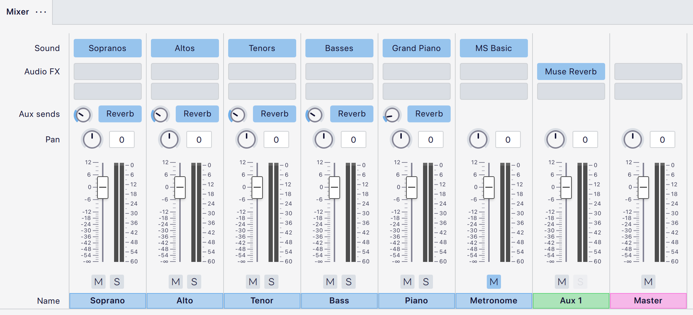
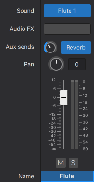
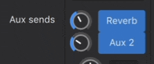
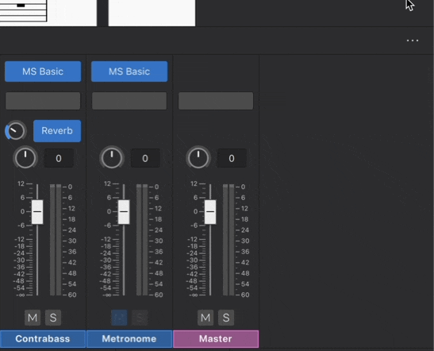

混音器
概述
混音器 允许你
- 更改乐器音色（不影响谱表记谱）。
- 加载虚拟乐器和效果器。
- 调整音量和声像，并对每个谱表的播放进行其他调整。

混音器被划分为多个颜色编码的 通道 条：
- 乐器：乐谱中的每个乐器都有自己的通道，底部显示乐器名称（上图中以强调色蓝色标记）。对于应用到谱表的每个 乐谱中段乐器变更，也会创建一个乐器通道。
- 节拍器：将节拍器静音或取消静音，并更改其音色、声像和音量（同样以蓝色标记）。
- Aux 1/Aux 2：这些是 辅助通道（以绿色标记），可用于容纳 VST 效果器单元。Aux 1 默认包含 Muse Reverb（见下文）。
- 主输出：主推子（以粉色标记）控制此 MuseScore Studio 项目的整体音频信号电平。
打开混音器
你可以通过以下方式显示/隐藏混音器：
- 单击 音符输入 工具栏中的 混音器 按钮。
- 单击 视图→混音器。
- 使用快捷键 F10。
注意：如果乐器通道条的顺序与乐谱中乐器的顺序不一致，请尝试关闭并重新打开混音器。
混音器控件
通道条包含以下控件（从上到下）：

- 音色：参见 下文。
- 音频 FX：参见 下文。
- Aux 发送：参见 下文。
- 声像：单击并拖动声像旋钮，可将音轨在立体声声场中向左或向右移动。双击旋钮可使声像回到中央位置。
- 音量：单击并拖动推子可增大或减小播放音量。双击推子可使其回到默认电平 0 dB。
- 静音 和 独奏：单击静音按钮可使音轨静音；再次单击可取消静音——依此类推。独奏按钮会使其他所有音轨静音，让你只听独奏的音轨。可以多选独奏和静音按钮，方便你隔离任意乐器的组合。
- 名称：请注意，此名称不受乐谱中乐器名称的任何更改的影响。
单击混音器面板右上角的三点图标可显示/隐藏某个控件。例如，你可以隐藏音量推子以节省垂直屏幕空间，便于查看乐谱。
音色
标有 音色 的行显示每个音轨所使用的虚拟乐器集。它可以是 SoundFont（.sf2、.sf3）（例如 MS Basic）、VST 乐器（VSTi），或 Muse Sound。如果你从该乐器集中选择了某个特定音色，那么将显示该音色的名称，而不是乐器集的名称。
更改乐器的音色
- 将鼠标悬停在虚拟乐器集的名称上（位于标有"音色"的行中）
- 单击出现的下拉按钮
- 在下拉菜单中找到并单击某个项目。
注意：这会更改乐器的音色，但不会影响乐器的记谱。如果你希望谱表也相应更新（例如带有正确的移调和谱号变化），参见 选择乐器。
从 MuseScore 4.2 开始，现在可以使用此方法从 SoundFont 中选择单个音色。如果你使用的是较旧版本的 MuseScore 4，请使用 SoundFonts 中详述的变通方法。
SFZ 文件受支持，但只能通过使用 VST 采样器；参见 SoundFonts。
音频 FX
音频 FX 下的每一行（插槽）允许你添加一个额外的 VST 效果器 或 Muse Reverb（一个原生效果器）。音频按从上到下的顺序经过音频 FX 处理。
- 在 音色 下拉菜单中查找 VSTi，在 音频 FX 下拉菜单中查找 VST 效果器。
- 要将音频 FX 应用到一个乐器，请向相应的乐器通道条 添加音频 FX。
- 要轻松地将相同的音频 FX 应用到多个乐器，请使用 Aux 发送。
添加音频 FX 插件
- 悬停在一个空的音频 FX 插槽上
- 单击出现的下拉按钮
- 在下拉菜单中找到并单击某个插件。
- 插件将作为独立窗口加载到 MuseScore 窗口之上。
- 添加一个效果器后，会自动创建一个新的空行（插槽），以便添加更多效果器。重复这些步骤以添加更多效果器。

禁用音频 FX 插件
- 悬停在一个音频 FX 插槽上
- 单击出现的电源图标。
这会在不将其从混音器中移除的情况下停用该插件。

移除音频 FX 插件
- 悬停在一个音频 FX 插槽上
- 单击出现的下拉按钮
- 单击 无效果。

Muse Reverb
Muse Reverb 是 MuseScore 的原生混响单元。默认情况下，每个乐器都会添加固定量的混响——你可以使用标有"Reverb"的蓝色按钮旁边的 Aux 发送 旋钮来调整每个通道的量。通过单击相同的按钮，可以为每个通道打开/关闭该效果。你还可以使用 Aux 1 推子调整 Muse Reverb 的输出音量。
Aux 发送
Aux 发送 下的每一行（插槽）调整对应 Aux 通道 效果器有多少被添加到为乐器生成的音频中。
有两个 Aux 发送，对应两个辅助通道：
- 第一行调整 Aux 通道 1（Aux 1）有多少被添加到当前乐器，默认显示为 Reverb，因为 Aux 1 默认包含 Muse Reverb。
- 第二行调整 Aux 通道 2（Aux 2）有多少被添加到当前乐器，Aux 2 默认不包含任何音频 FX。
- 两个 Aux 发送默认对每个乐器都启用，并且可以分别禁用。音频先经过 Aux 1，再经过 Aux 2 处理。
- 你还可以通过添加 音频 FX 将音频效果器仅应用到一个乐器。

显示/隐藏 Aux 发送行（插槽）
- 单击 混音器 面板右上角的三点图标
- 悬停在 视图 上
- 单击 Aux 发送 1 和/或 Aux 发送 2。

禁用 Aux 发送行（插槽）
- 确保 Aux 发送可见
- 单击 Reverb 关闭 Aux 发送 1，或单击 Aux 2 关闭 Aux 发送 2。
Aux 通道
Aux 通道是用于简化音频 FX 应用的特殊通道。你可以在一个 Aux 通道 中设置音频 FX，然后将其应用到多个乐器。
每个乐谱中最多有两个 Aux 通道：
- Aux 1：默认包含 Muse Reverb，但你可以 移除 它，并替换为任何你喜欢的音频 FX。
- Aux 2：默认为空。
显示/隐藏 Aux 通道
默认情况下，辅助通道是隐藏的。要显示/隐藏辅助通道：
- 单击 混音器 面板右上角的三点图标
- 悬停在 视图 上
- 单击 Aux 通道 1 和/或 Aux 通道 2。

向 Aux 通道添加音频 FX
此过程与向乐器通道添加音频 FX 相同，参见 添加音频 FX。
如果 Aux 通道中只有一个音频 FX，该通道条及其对应的 Aux 发送会以该音频 FX 的名称标记。如果多于一个，则标记为 Aux 1 和 Aux 2。你可能需要保存并重新打开乐谱才能看到标签更新。
调整 Aux 通道的电平
Aux 通道条有音量推子。这会改变所有已开启对应 Aux 发送的通道条上效果器的音量。可以将其理解为设置乐器通道可以接收的效果器的最大音量。
将 Aux 通道的效果器应用到乐器
要调整 Aux 通道的效果器在每个乐器上通过的量，请使用该乐器通道条上对应 Aux 发送 行（插槽）中的旋钮，参见 Aux 发送。